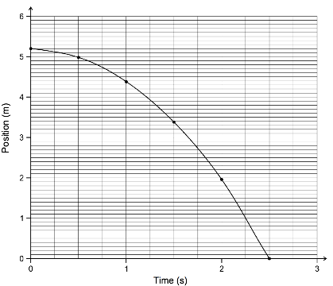

4. An astronaut drops a tool while performing maintenance on the lunar module on the moon. The motion for the tool is illustrated by the position-time graph below.

What is the velocity of the tool at
1.5 seconds?
A) - 7.5 m/s
B) - 3.4 m/s
C) - 2.4 m/s
D) - 0.42 m/s